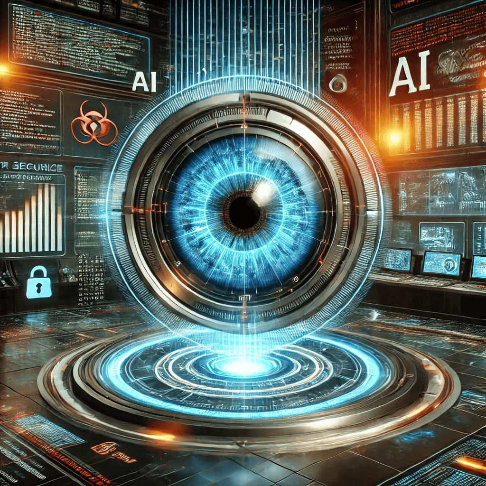

Detection & Analysis
The rapid evolution of cyber threats—from targeted ransomware campaigns to sophisticated zero-day exploits—demands a more dynamic and intelligent defense strategy than traditional, rule-based systems can offer. In this context, AI has emerged as a game-changer, particularly when it comes to real-time threat detection and analysis. By leveraging machine learning models trained on vast datasets—ranging from historical attack signatures to evolving malware behaviors—AI-powered systems can continuously monitor networks, endpoints, and user activities. This real-time surveillance not only identifies potential dangers based on known threats but also detects subtle, previously unseen anomalies that hint at brand-new attack vectors. Such adaptability provides a crucial layer of protection in a landscape where attackers routinely change their methods to circumvent static defenses.
Fundamentally, AI-driven detection tools excel at processing and correlating large volumes of data at unprecedented speed. They sift through logs, user activities, network packets, and system events, flagging unusual patterns like spikes in data transfers or suspicious login attempts. This level of analysis is often coupled with advanced algorithms such as deep learning or anomaly detection, enabling security teams to uncover hidden indicators of compromise that might remain invisible under manual scrutiny. Moreover, many AI systems incorporate threat intelligence feeds to cross-reference emerging malicious domains, IP addresses, and file hashes. By synthesizing these intelligence inputs in real time, AI-based platforms can provide a proactive approach to security—alerting defenders before malicious code spreads through the network or sensitive data is exfiltrated.

Yet, even the most advanced AI models should be part of a broader, layered security strategy. Human expertise remains indispensable for interpreting AI alerts, performing in-depth investigations, and making nuanced decisions about containment or remediation. Regular audits, governance policies, and comprehensive training further reinforce the reliability of AI-driven solutions, preventing potential pitfalls such as algorithmic bias or overreliance on automation. As cyber threats continue to morph in complexity, the fusion of human intelligence and AI’s capacity for real-time data analysis forms the strongest bulwark against both everyday threats and high-stakes, targeted attacks. By integrating AI tools thoughtfully into the overall cybersecurity framework, organizations can stay ahead of evolving hazards, safeguard critical data, and uphold the trust of stakeholders and customers alike.